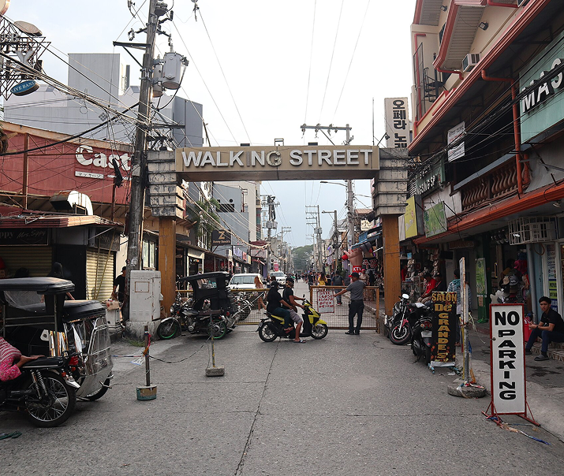
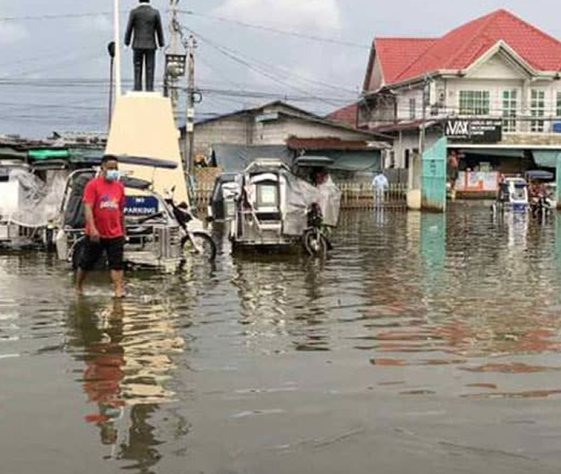
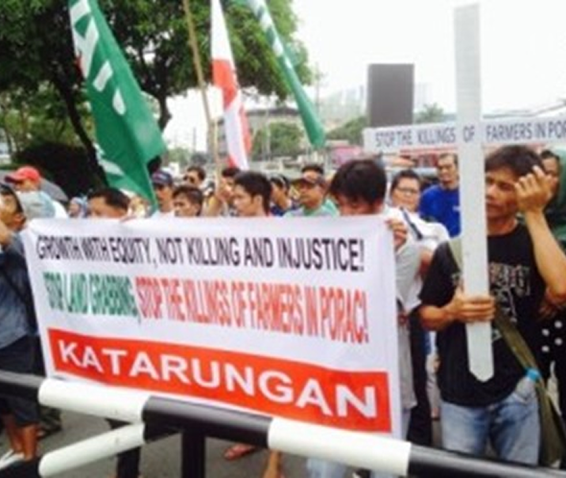

What is happening?

While it is important to highlight the many beautiful things
about Pampanga, it is also crucial to inform ourelves about
the struggles that people have faced in the region.
Kampampangan people are strong-willed, and to discuss
their struggles would be doing these people justice.

Pampanga is susceptible to floods and extreme
weather, as is the rest of the Philippines. The
flood control is poor, and many have died or have
had their property destroyed due to extreme weather.
Pampanga is among the top most flood-prone
areas in the Philippines, and due to this
they have faced devastating travesties.

Due to the high urbanisation of the area,
farmers and agriculture have been pushed
out and disregarded in favour of chasing
land. Real estate agencies have been at a
clash with farmers in the area due to
conflicts over the land that farmers had
inhabited and made their livelihood for years.
Farmer Melon Barcia was murdered in his home
in 2014 for fighting against landgrabbing and
defending human rights as a farmer-leader.
